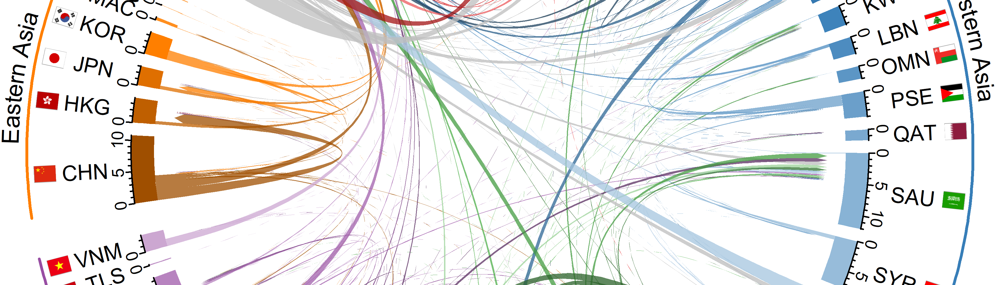
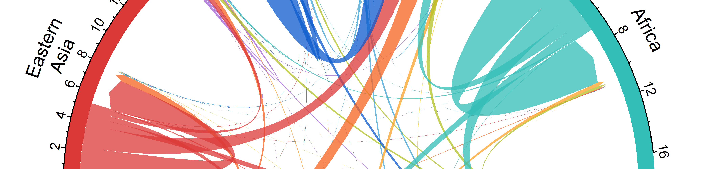

Posts

Migrant Stock Chord Diagrams
During the last few months I have given some introductory talks on international migration in Asia and Europe. I had a couple of requests to share the animated chord diagrams that I created for others to use in their teaching materials. These are below, along with some extra plots for Africa and the Americas (Northern, Central and Southern America as well as the Caribbean.)
The chords in the diagrams represent the connection between the places of birth (at the base of the chord) and places of residence (at the arrow head of the chord).

Animating Changes in Football Kits using R
Background
I’m loving the magick package at the moment. Reading through the vignette I spotted the image_morph() function. In this post I experiment with the function to build the GIF below that shows the changes in the England football first kit over time, using images from the excellent Historical Football Kits website.
Scraping
The Historical Football Kits website has a detailed section on England kits spread over six pages, starting from the first outfits used in 1872.

Animated Directional Chord Diagrams
Background
A little while ago my paper in International Migration Review on global migration flow estimates came out online. The paper includes a number of directional chord diagrams to visualize the estimates.
Recently I have been playing around tweenr and the magick packages for animated population pyramids. In this post I attempt to show how to use these packages to produce animated directional chord diagrams of global migration flow estimates